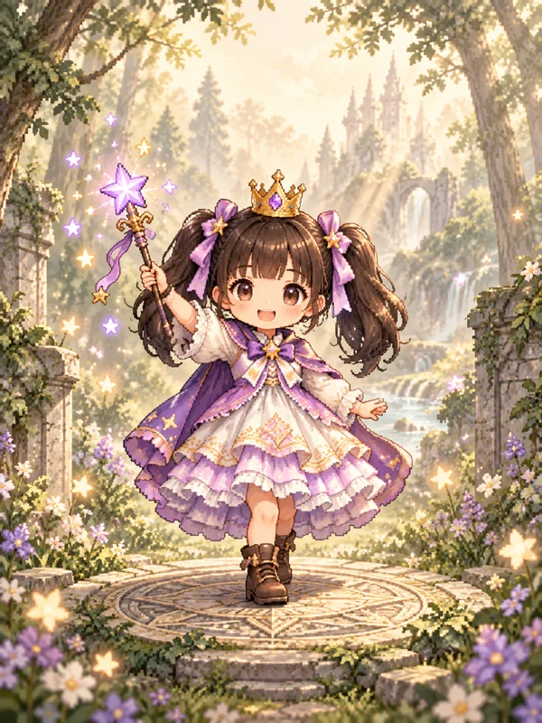
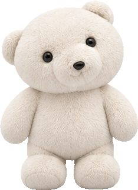
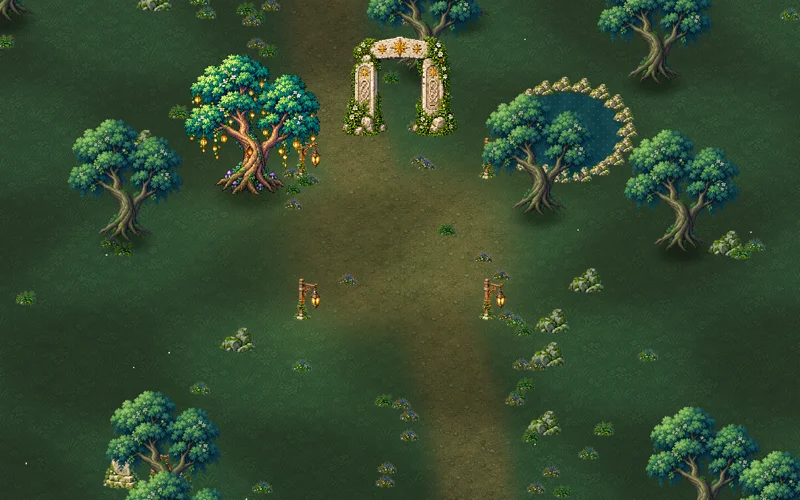
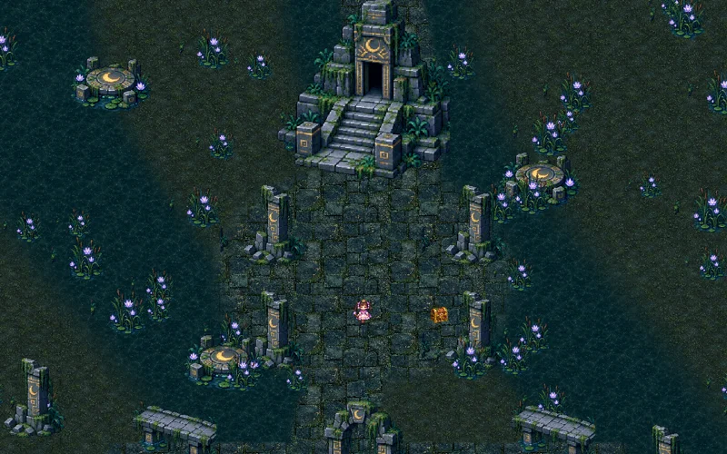
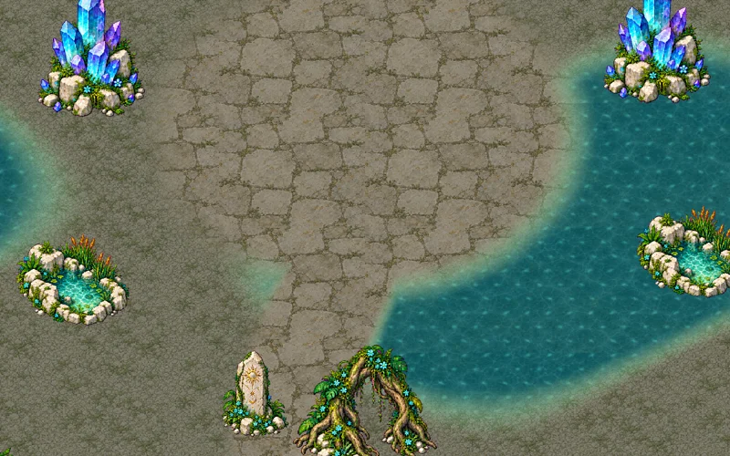

并肩，才有勇气
本地双人合作，各自搭配技能与变身，共享成长。伙伴倒下时，靠近救援，再一起向前。
LOCAL CO-OPA LITTLE COURAGE. A WORLD OF WONDER.
E M B E R W A K E
和你一起，
点亮整片星河。
两位小小的英雄，一场不愿独行的冒险。
在童话与魔法之间，迎战潮水般涌来的未知。
01 / THE ADVENTURE
自动施法，灵巧走位。拾起经验，选择成长，
让每一次出发，都成为不同的童话。
本地双人合作，各自搭配技能与变身，共享成长。伙伴倒下时，靠近救援，再一起向前。
LOCAL CO-OP从一次星光、一道冰霜开始。选择技能分支，逐步进化，让小小的法术绽放成满屏魔法。
EVOLVE YOUR MAGIC收集并召唤奇幻伙伴。让翠羽蜂鸟、阿尔拜辛精灵与阿米拉米亚，成为冒险中的助力。
MEET YOUR COMPANIONS小公主化身黑曜石蝴蝶，小白白驾驭熊高达。用各自的专属力量，扭转战局。
AWAKEN YOUR POWER02 / MOTION & MAGIC
一段想象，一段真实的战斗。
电影感宣传片 豆包 AI 宣传演绎，呈现世界氛围与角色想象。
开发中实机 游戏内演示剪辑，展示合作、技能、伙伴与变身。
宣传片为 AI 概念演绎，实际玩法与画面请参考实机视频。实机片段使用演示场景，隐藏部分界面；游戏内容持续开发中。

03 / BETTER TOGETHER
小公主挥动星星魔杖，小白白唤来冰雪。
不同的魔法，相同的勇气。
独自探索，或邀请身边的人加入。
从森林深处到星河尽头，把背后交给彼此。

软乎乎的伙伴，冰雪般的力量。
04 / BEYOND THE FOREST
三章世界 · 不同的战场与挑战

沿着林间微光，迈出冒险的第一步。

沉没神庙深处，古老的危险悄然苏醒。

循着映星圣泉，迎向宇宙鳄鱼的挑战。
05 / MADE WITH LOVE
制作故事 · 创作者的话
我和孩子，一起创造的冒险。
做《余烬回廊》的初衷很简单：
我想和孩子多一种一起互动的方式。
这款游戏，是我和孩子一起互动、一起创造的一个载体。我希望这段相处的时间，能慢慢变成一个可以走进去、可以亲手探索的小世界。
在这里，想象可以拥有形状：小公主挥起魔杖，小白白唤来冰雪，森林之外还有沼泽与星河。做游戏的过程，也可以成为我们认识彼此的过程。
我想留下的，不只是一款游戏。更是我们一起参与创造的这段时光，以及一个可以并肩出发的地方。
希望有一天，回头看这个小世界时，
我们都能说：这是我们一起做的。
——《余烬回廊》创作者
06 / WORK IN PROGRESS
开发手记 · 阶段回顾 · 持续更新
从第一位角色，到两个人并肩冒险。这里记录《余烬回廊》如何一点点长出自己的模样。以下按主题整理已有开发记录；每一次加入新内容，也伴随着反复调整。
最初先做角色选择与小公主的形象、行走动作，让她能够真正进入游戏。皇冠、裙摆和脚步，不只是画出来，还要在移动时保持完整、稳定。
星弹、月光涟漪、冰雹与雷击逐步丰富起来。后来加入伤害、范围、多重等强化方向和技能进化，让升级不只是数字变大，也能改变战斗的节奏与画面。
毛绒绒的小白白带着雪球、冰雪与召唤技能加入冒险。小公主的黑曜石蝴蝶、小白白的熊高达，也逐渐成为两位角色各自鲜明的力量。
从童话森林扩展到月蚀沼泽，再到星河天井。新地图带来新的敌人和 Boss；制作时还要逐一调整场景碰撞、招式预警与伤害范围，让奇幻画面也有清楚的战斗规则。
加入本地双人、独立选技、共享成长与倒地救援；拉开距离时分屏，靠近时重新合屏。随后继续打磨双人界面和出发前的选角舞台，让两位玩家都能找到自己的位置。
修正角色动作裁切、机甲炮击与战斗反馈，接入章节配乐，调整刷怪与经验节奏。也把实际游戏画面整理成短片，与 AI 氛围宣传片分开展示，让大家看见想象，也看见开发中的真实进展。
已有内容仍在迭代，平衡与操作手感还需要更多实际试玩。这份手记记录开发过程，游戏尚未正式发行。
THE STORY IS STILL UNFOLDING
《余烬回廊》正在开发中。
愿每一个小小的你，都能找到一起冒险的人。